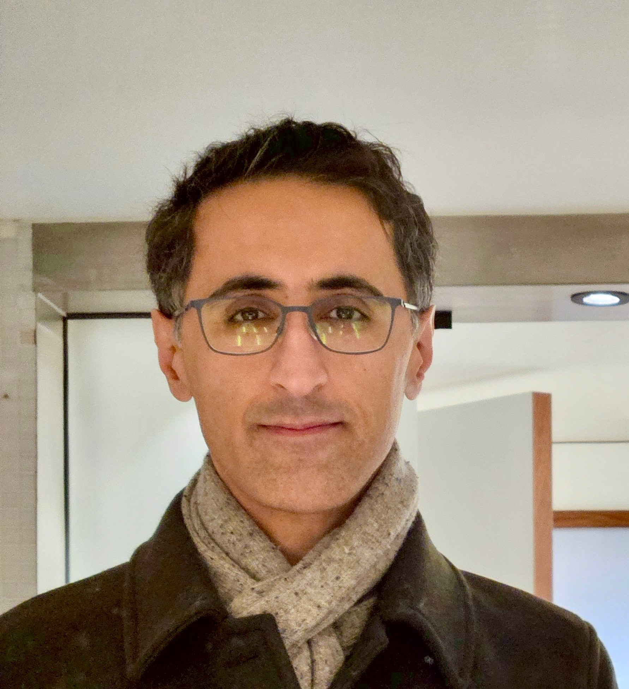

September 2025 – Present
Lecturer
University of Amsterdam — Amsterdam Business School

Lecturer
University of Amsterdam — Amsterdam Business School
ML Research Engineering Manager
KPMG Nederland
I am a Lecturer at the University of Amsterdam's Amsterdam Business School and an ML Research Engineering Manager at KPMG Nederland. My work focuses on probabilistic machine learning, privacy-preserving AI, and applied machine learning research. I am particularly interested in generative models, differential privacy, federated learning, normalizing flows, and methods for building reliable machine-learning systems in high-stakes settings. My current work spans academic research and applied problems in areas including financial audit and healthcare.
Research interests: Probabilistic Generative Models · Differential Privacy · Federated Learning · Normalizing Flows · Privacy-Preserving Machine Learning · Synthetic Data Generation · Medical Imaging · Fairness in AI
Responsible AI in Finance: Steerable and explainable fraud detection; Fair data generation for financial datasets using Neuro-Symbolic AI
Co-supervision/collaboration: Ana Oprescu, Erman Acar, Erik Winands, Sander Klous
NeuroSymbolic AI for Interpretable Graph Anomaly Detection
Graph-Structured Evidence Grounding for Probabilistic Financial Disclosure Verification
with Marcel Boersma
Graph-Structured Information Extraction and Evidence Alignment for Audit Vouching
with Marcel Boersma
Energy-Based Probabilistic Models for Heterogeneous Ledger Graphs
with Ana Oprescu
Machine Unlearning with Lightweight Certification in Federated Settings
with Tom van Engers
Comparison of Federated Learning Scenarios: Vantage6 and PyTorch Distributed for Privacy-Preserving Learning
Effect of Data Bias in Differential Private Federated Learning and Its Mitigation Methods
Differential Privacy in Deep Learning: A Tabular to Image Classification Approach
The Impact of Training Scale on Model Performance and Uncertainty in Machine Learning-Based Aircraft Predictive Maintenance
joint work with KLM
Implementation and Analysis of Reconstruction Attacks Against Privacy Preserving Machine Learning Models
Membership Inference Attacks on Differentially Private Machine Learning Models
Differential Privacy and Model Extraction Attacks on Deep Neural Networks
September 2025 – Present
University of Amsterdam — Amsterdam Business School
September 2025 – Present
KPMG Nederland, Amsterdam
September 2024 – August 2025
Netherlands eScience Center, Amsterdam
March 2024 – August 2024
University of Amsterdam
Research: Private Generative Models for Data Synthesis
Focus: Differentially private synthetic data generation with provable privacy guarantees.
December 2019 – February 2024
University of Amsterdam
Dissertation: Data Synthesis Using Generative Models
Research focus: Privacy-preserving synthetic data generation using differentially private generative models.
The work developed methods for improving generative-model and synthetic-data quality while maintaining privacy guarantees.
February 2018 – November 2019
University of Amsterdam
Thesis: Radio Frequency Interference Mitigation in Radio Astronomy Using Deep Learning